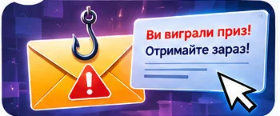

📖 Історія: нова справа
Медіаклуб отримав повідомлення: «Ви перемогли! Заберіть подарунок за 5 хвилин». Кнопка веде на дивний сайт. Команда має перевірити лист, не відкриваючи небезпечних посилань.
Сюжетна інтерактивна майстерка

Медіаклуб отримав повідомлення: «Ви перемогли! Заберіть подарунок за 5 хвилин». Кнопка веде на дивний сайт. Команда має перевірити лист, не відкриваючи небезпечних посилань.
Чому терміновість і подарунок часто йдуть поруч?
Фішинг — спроба виманити дані через підроблені повідомлення або сторінки. Перевіряйте адресу, відправника та спосіб зв'язку.
Складіть докази та оберіть безпечний маршрут.
Надішліть код підтвердження та натисніть на кнопку, інакше подарунок зникне через 5 хвилин.
Кнопка: «Отримати приз»Домен .example використано для навчального прикладу. Нічого відкривати не потрібно.
Перетягніть картки у відповідні зони або натисніть на них, щоб змінити категорію.
Які ознаки вказують на маніпуляцію?
Сформулюйте власне правило або коротку інструкцію для друга. Знайдіть приклад, де воно стане корисним.
Запишіть, що Ви перевірили, що змінилося під час експерименту і який висновок зробили.
У вікні друку оберіть «Зберегти як PDF». Ваші дані залишаються в браузері.